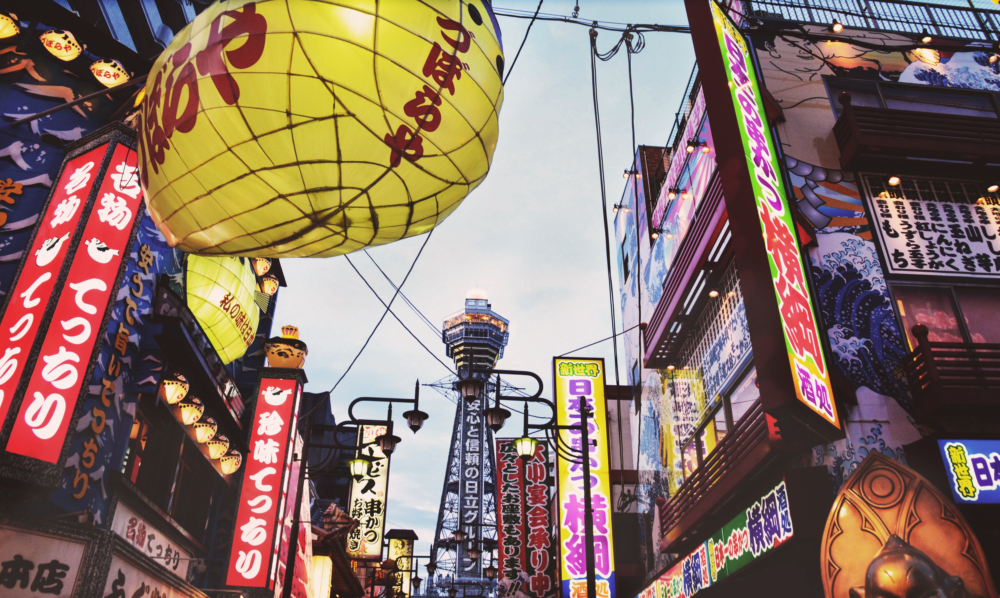
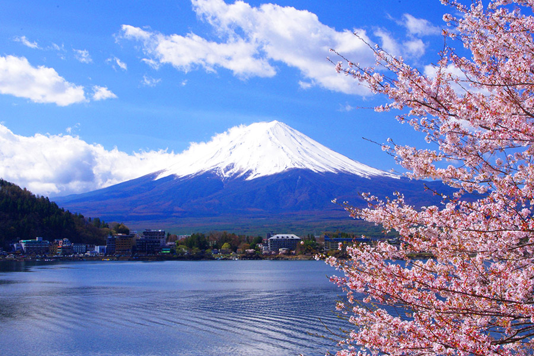
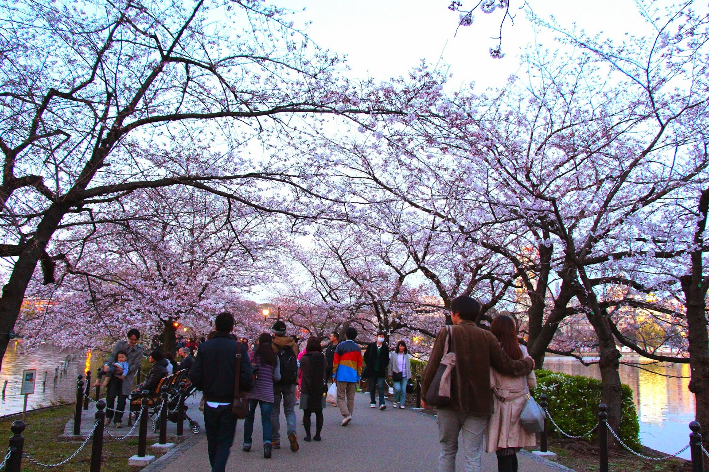
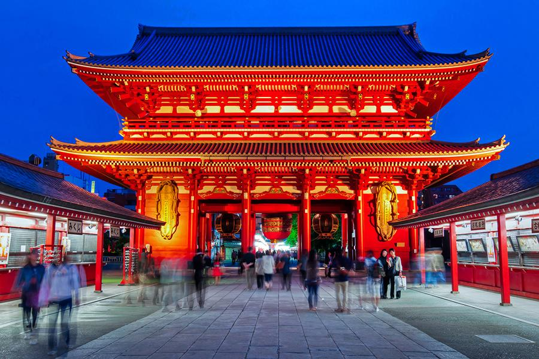

Tóquio
A capital do Japão é uma das maiores megalópoles do planeta, uma imensa e pulsante mancha urbana com centenas de quilômetros de linhas de trem e metrô, dezenas de espetaculares edifícios onde matrizes de multinacionais enviam ordens a todo o planeta e milhões de pessoas em suas dependências e com uma grande variedade de bons passeios.

O Japão moderno copiou tão bem o capitalismo americano que parece tê-lo superado. Tóquio, assim como um formigueiro, tem uma grande concentração urbana, letreiros luminosos, neons, luzes piscando. Chega-se a sentir falta de espaço: tudo é pequeno, apertado, novo e agitado.
Monte Fuji
O Monte Fuji, conhecido (como fuji-san pelos nativos) é a maior montanha do Japão e um de seus símbolos,trata-se de um vulcão inatividade há mais de 300 anos sendo muito amado e reverenciado pelo povo japonês, considerado uma montanha sagrada para religiões locais.
O Mercado Tsukiji
O Mercado Tsukiji é tido como o maior mercado grossista de peixe do mundo. Fica no centro de Tóquio, junto ao exclusivo bairro de Ginza, onde pontuam as principais marcas de luxo do planeta.
Parque Ueno, em Taito

Muito popular para as festas hanani (quando os japoneses se juntam para contemplar as cerejeiras em flor), o Parque Ueno é igualmente agradável nas outras estações do ano.
Trata-se de um enorme e muito agradável parque público, de entrada gratuita, que inclui no seu perímetro um jardim zoológico e diversos templos e museus.
Templo Senso-ji

O Templo Senso-Ji, mais antigo templo budista de Tóquio, está localizado no bairro de Asakusa. Também é conhecido como Asakusa Kannon foi construído em homenagem à deusa budista da misericórdia Kannon. Segundo a história, em 628 dois pescadores apanharam no rio sumida uma estátua de ouro da deusa Kannon e em 645 lhe foi dedicado um templo.